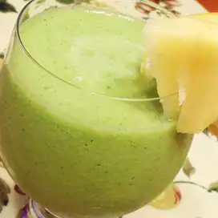

Pineapple Cleanser Smoothie

Description
Pineapple detox smoothie recipe made with cucumber,
celery, lemon, ginger, bananas, and peaches. An easy
detox smoothie that tastes amazing!
Ingredient
- 1 cup coconut water, or to taste
- 1 cup chopped fresh pineapple
- 1 stalk celery
- 1/2 cucumber, peeled
- 1/3 bunch fresh parsley
- 1/2 lemon, peeled
- 1 (1 inch) piece fresh ginger root
Steps
-
Blend coconut water, pineapple, celery, cucumber,
parsley, lemon, and ginger together in a blender
until smooth.